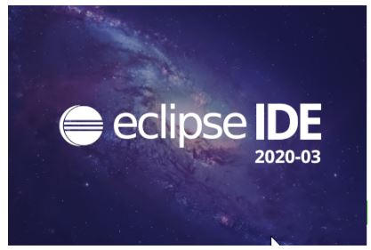

Home
Home

Java est un langage de programmation largement utilisé pour coder des applications web. Il a été fréquemment choisi parmi les développeurs depuis plus de deux décennies, des millions d'applications Java étant utilisées aujourd'hui.
Java est une technologie composée d’un langage de programmation orienté objet POOet d’un environnement d’exécution. Préalablement nommé Oak, il a été crée par James Gosling et Patrick Naughton chez Sun Microsystems avec le soutien de Bill Joy. Le langage Java fut officiellement présenté le 23 mai 1995 au SunWorld.
Java est un langage de programmation et une plate-forme de calcul lancé par Sun Microsystems en 1995. Depuis ses débuts modestes, Java a beaucoup évolué. A l'heure actuelle, une grande partie du monde numérique dépend de Java : de nombreux services et applications reposent sur cette plate-forme fiable.
| l'installation IDE Eclips |  |